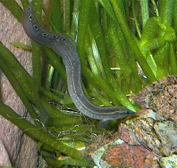

Macrognatus
Macrognatus burrows into the gravel. Sometimes you can see only its spotted tail or only its head or it is entirely in ground. The fish likes long watching around while it is almost entirely hided in the gravel.
My macrognatuses feed on live worms only. They don't touch dry food even if they didn't see worms for a month or more. I guess they hunt for small worms, which live right in the aquarium's ground. So one or two macrognatuses may live in your tank without especial care. Sometimes only change the water.


